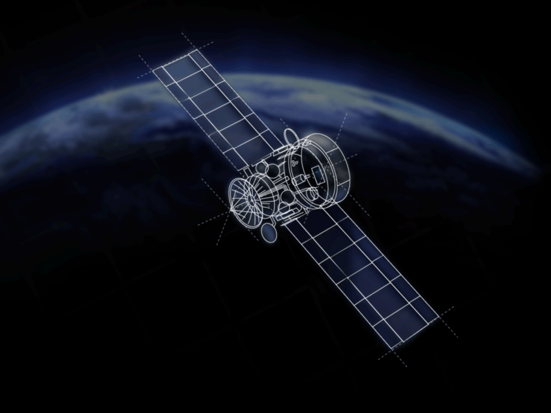

|
Starlink : Risque de
désintégration récurrente de
satellites au-dessus de nous ?
|
 |
|
Lorsqu'ils rentrent dans l'atmosphère, les satellites Starlink en pleine désintégration
présentant un risque pour notre sécurité. Ces satellites, composés principalement
d'aluminium, produisent des oxydes nocifs pour la couche d'ozone lors de leur
destruction.
|